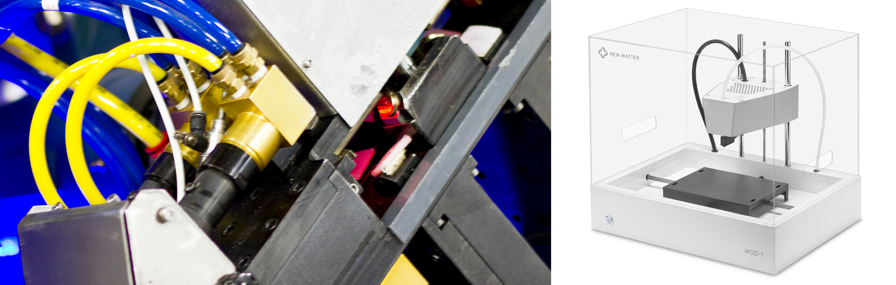
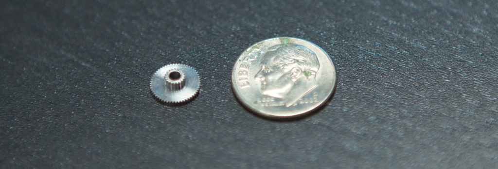
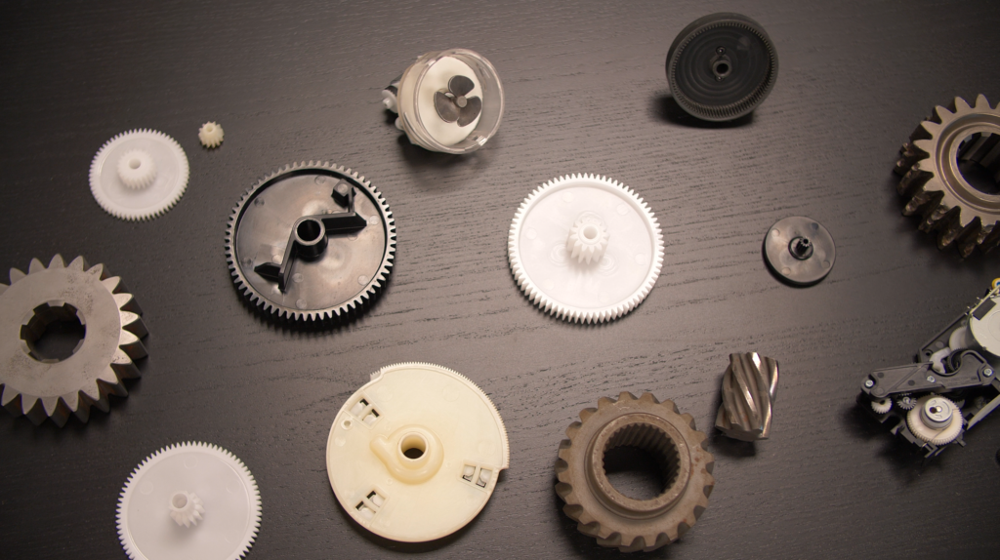
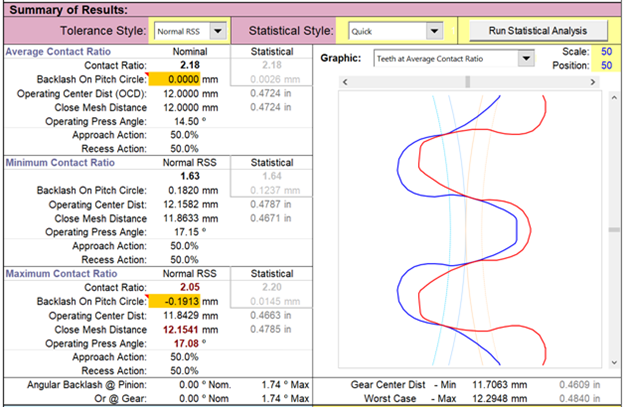
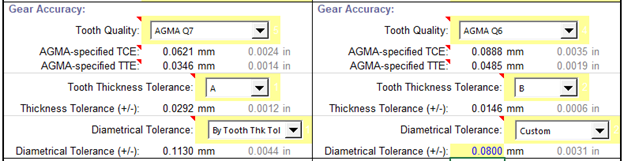
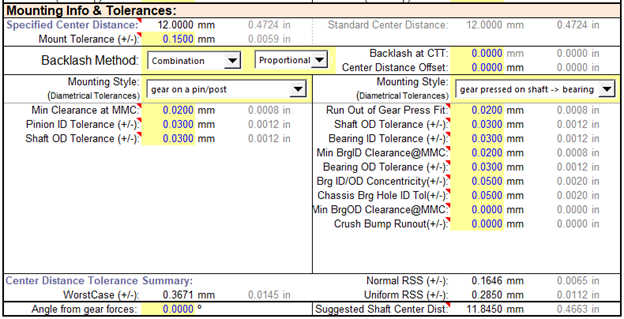

Expertise

MECHATRONICS
Designing electro-mechanical products and machines, especially ones that require precise motion, is a cross disciplinary endeavor requiring advanced skills in mechanical, electrical, computer, and controls engineering. This mix of skills has come to be known as "mechatronics.” The Venn diagram above shows how these four different disciplines overlap to create the field of mechatronics.
Most companies that specialize in mechatronics, automation, or controls do so from an industrial automation standpoint. These companies integrate off-the-shelf industrial components into a solution. This is definitely the way to go if you are building one, or a few products or machines.
However, when designing a product that will be built in volumes ranging from many hundreds to hundreds of thousands or more, using off-the-shelf components is simply not cost competitive. Product development firms like Simplexity understand production processes and design techniques that deliver the best cost to performance ratios for mid- to high-volume product design.
The overlap between mechatronics and product development can best be described by the phrase “Embedded Motion.” Things like a television require expert product development, but have no moving parts and are not considered mechatronic products.There are also mechatronic solutions, like factory automation, that fall outside of the “product” space. At the intersection of these spaces are those products that have motion embedded in their hearts, and that is where Simplexity operates.
SIMPLEXITY FOCUSES ON MECHATRONICS FOR THE DEVELOPMENT OF MID-TO-HIGH VOLUME PRODUCTS
For products with a low volume and a high component cost (top left of the diagram above), designers typically need to rely on motion system resellers and integrators to specify and integrate commercial, off-the-shelf components into a custom industrial solution. At the bottom left of the diagram is the hobbyist or maker market, where people strive to make low volume products with low cost components like Arduino or Raspberry Pi. The top right of the diagram shows custom industrial products, like cars and construction equipment that use higher cost motion components.
The bottom right of the diagram shows the types of products that are considered embedded motion products. Since product volumes are higher, relying on the same motion system components and integrators as the top left of the diagram will yield products that are not cost competitive. In this space, highly experienced mechatronic engineers are vital. Without the cross-disciplinary skillset that mechatronic engineers provide, motion systems are typically overdesigned in each individual design subsystem. With a true cross-disciplinary team, new tradeoffs become available which can yield an overall better design.
Historically, Simplexity has found that teams without a dedicated mechatronics system engineer typically significantly overdesign, adding as much 2x the required cost to the system. Since many of our engineers have decades of experience designing HP’s high volume ink-jet printers, they have learned the secrets of designing motion systems with best-in-class cost to performance ratios. With a systems approach and sufficient characterization, design margin can be balanced across the system components so that no component is overdesigned. That optimization in margin can yield a huge reduction in total cost for higher production volume.
EMBEDDED MOTION SOLUTIONS
How can Simplexity deliver lower risk AND faster time-to-market in addition to competitive product cost? We have invested many years and hundreds of thousands of dollars to design, build, and test mechatronic solutions for the embedded motion space. This is analogous to what industrial component suppliers have done for the low-volume markets, but our solutions are optimized for the mid- to high-volume product space.
Introducing Simplexity SNAP
Simplexity’s SNAP is an all-purpose mechatronics board that speeds up time to market by allowing firmware and controls teams to start working in parallel with the electrical team. As a result, mechanical prototypes start moving sooner too. Early development on the SNAP board will eventually transition to a custom PCA into which the existing firmware can be ported seamlessly. You own the design of this custom PCA, giving you complete control over the product life cycle. In short, SNAP will jump start your product development, so you don’t have to begin with a blank sheet of paper or use expensive industrial components.
POWER MANAGEMENT
Power management is a critical part of the design for small low-power devices and impacts nearly all aspects of the system design. It’s a team effort that needs to be planned for and worked through from the very beginning of the project to ensure a successful final product design.
Our clients rely on Simplexity’s experienced design engineering teams to deliver thoughtful, well-engineered designs with smart solutions in power management.
TYPICAL APPLICATIONS
LOW POWER REQUIREMENTS SIMPLEXITY ADDRESSES
With extensive experience in medical devices, wearables, and remote sensors, Simplexity has designed dozens of devices requiring low-power and optimized power management. Particular areas of expertise include:
RELEVANT CASE STUDIES
Simplexity has extensive experience in Low Power Designs ranging from fitness wearables to medical devices and therapeutics:
GEAR DESIGN AND ANALYSIS
Engineers at Simplexity have designed gears from high horsepower automotive street & racing transmissions (up to 4.5 Module gears) to micro MIM and plastic gears (down to 0.15 Module gears) for small consumer products. Over a number of years, our team of gear design analysis experts at Simplexity developed an easy to use yet very powerful proprietary gear design tool, called the Simplexity Gear Design ProTM. It rivals the power of commercially available design packages at a fraction of the cost while gaining our engineers the flexibility to change and update the tool depending upon the client’s needs. For example, we recently added limited involute spline and bevel gear design capabilities based upon a client’s needs.
Basic Design Modes
The most common gears designed are plain spur gears but the Simplexity Gear Design ProTM can also design rack & pinion drives, internal spur gear rings, helical gears, non-enveloping worm & worm gear pairs, and bevel spur gears. These all can be designed as fully custom modules and pressure angles to meet any specific need (typically these are molded or wire cut types of gears) or they can be designed such that they meet a very specific client need while being able to be machined using common off-the-shelf tools.
System Approach
As with our other design expertise, we look at the gear train as a system to optimize more than just evaluating the gear ratio. The design tool incorporates a Monte Carlo style tolerance analysis system to consider not only the gear manufacturing tolerances but also the variation around how the gears are mounted and are aligned to each other. This analysis not only includes the normal mechanical tolerances but also includes material attributes for temperature and humidity effects. The Simplexity Gear Design ProTM automatically generates data for nominal, minimum, or maximum contact ratio conditions.
Quality
Presently the quality system built into the design tool is based upon the AGMA 2000 standards. We have worked with the AGMA 2015, JIS 1998, JIS 2016 and current ISO/DIN standards. We understand the various quality levels, how they affect performance, part cost, and manufacturing requirements. Our team has been involved with high volume manufacturing of high precision (AGMA Q14C molded plastic gears at 0.5 Mod) down to low volume cut or ground tooth form steel gears for decades.
Data Exchange with 3D CAD
The Simplexity Gear Design ProTM can export the tooth form information for direct import into either SolidWorks or Creo Elements Direct. This tooth form information can be exported in three states: average or nominal contact ratio conditions, minimum contact ratio conditions, or maximum contact ratio conditions. This allows for 3D modeling or 3D finite element analysis (FEA) at the tolerance extremes. Molded or machined gears can be manufactured directly from this 3D CAD.
Gear Manufacturing Data Exchange with 2D CAD
The Simplexity Gear Design ProTM can directly export a variety of gear chart styles (gear type & manufacturing method specific) to be inserted into CAD drawings.
Tooth Form
The Simplexity Gear Design ProTM allows for use of a large number of standard tooth forms (AGMA full fillet root, ISO 53-A, PGT-1 thru 4, etc), which allows the user to modify the tooth thickness, major & minor diameter, root radius and tip radius all independently depending upon the needs. The Simplexity Gear ProTM also has some standard tip relief forms built in for use with lower stiffness materials or highly stressed gear pairs.
Center to Center distance and Mounting Styles
The Simplexity Gear Design ProTM allows the designer to specify any desired center to center distance. The Simplexity Gear Design ProTM includes a number of standard mounting styles plus a fully custom style to guide the user for all potential tolerances.
Materials
The Simplexity Gear Design ProTM contains a local materials database which can be easily updated or modified by the end user. A partial sample of the database is shown below.

Backlash
The Simplexity Gear Design ProTM not only calculates tooth to tooth backlash at the three contact ratio conditions, but also contains methods to assist the designer in modifying the backlash amount.
Strength
The Simplexity Gear Design ProTM allows for the input of various loads that can output the strength calculation based upon the Lewis tooth form calculations. Results have been validated for a variety of tooth forms and materials thru the use of FEA. This allows for very quick feedback on a tooth design with respect to strength. The contact stress is also calculated using standard AGMA formulas.
FLUIDICS AND MICROFLUIDICS MANAGEMENT
Precision fluidic control can include storage, handling, movement, dosing and dispensing, often recycling a variety of liquids. Simplexity has extensive fluidics and microfluidics management systems design experience initiating with our roots in HP printer design engineering but also deep molecular diagnostics experience.
TYPICAL APPLICATIONS
Our clients rely on Simplexity for our extensive experience designing devices that require fluidics or microfluidics management including medical devices, biotech, molecular diagnostics, and printing applications.
FLUIDICS MANAGEMENT REQUIREMENTS SIMPLEXITY ADDRESSES:
Fluid Management requirements vary widely based on applications. Simplexity has experience in addressing a range of project requirements:
RELEVANT CASE STUDIES
Simplexity has extensive experience in Fluidics and Microfluidics management ranging from medical devices to molecular diagnostics to printers. The majority of our work in this area is client-confidential but below are a few sample case studies we are able to share.
FLUIDICS AND MICROFLUIDICS MANAGEMENT
Precision fluidic control can include storage, handling, movement, dosing and dispensing, often recycling a variety of liquids. Simplexity has extensive fluidics and microfluidics management systems design experience initiating with our roots in HP printer design engineering but also deep molecular diagnostics experience.
TYPICAL APPLICATIONS
Our clients rely on Simplexity for our extensive experience designing devices that require fluidics or microfluidics management including medical devices, biotech, molecular diagnostics, and printing applications.
FLUIDICS MANAGEMENT REQUIREMENTS SIMPLEXITY ADDRESSES:
Fluid Management requirements vary widely based on applications. Simplexity has experience in addressing a range of project requirements:
RELEVANT CASE STUDIES
Simplexity has extensive experience in Fluidics and Microfluidics management ranging from medical devices to molecular diagnostics to printers. The majority of our work in this area is client-confidential but below are a few sample case studies we are able to share.